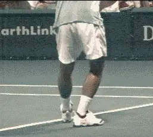
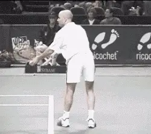
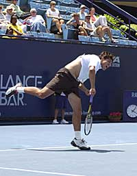
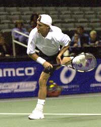
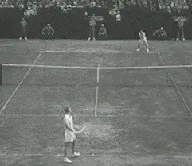
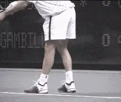
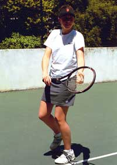
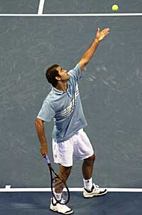
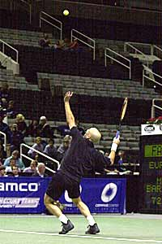

Myth of the Back Foot¶
John Yandell¶
What footwork pattern should you employ in your service motion to get more power and/or get to the net more quickly? Don't good players step into the ball with the back foot for both these reasons?

It's easy for most players to develop the same footwork pattern as a top pro like Pete Sampras.
The fact is virtually no pro player steps into the serve, and the same is true of good servers at every level. The step with the back foot is a myth.
If good servers don't step through the motion, what do they do? They all land in the court on the front foot. Rather than moving the back foot forward, they do the opposite.
Good servers actually kick the back leg backward in the opposite direction of the serve. The back leg usually reaches a position where the calf or even the upper leg is actually horizontal, or parallel, to the court surface.
So the real pattern is forward with the front foot, and backward with the back. If you're skeptical, don't take my word for it-just watch any TV match and you'll see exactly what I am talking about it.
Or go to the Stroke Archive and pull up any server. Pay particular attention to the section on Leg Action. You'll see the players all land on the front foot with the back leg kicking backward. It's the same for the women as the men.
Why? This pattern of leg action is a direct result of the deep knee bend which is universal on the serve in the modern game. Watch a player like Pete. His knee bend is phenomenal. At the deepest part of the bend, his upper leg or thigh is at an angle of probably 30 degrees or more to the court.

\ Like Pete, Agassi bends deeply, explodes to the ball, lands on the front foot and kicks the back foot backwards.Andre Agassi has at least as much leg action as Pete. He has one of the most underrated serves in tennis, and he also has one of the deepest knee bends.
Both Pete and Andre coil the legs, primarily the quadriceps, which are the strongest muscles in the body, through their incredible knee bend. This stores tremendous energy in the leg muscles. As the legs uncoil this energy is naturally released. This in turn propels the players upward and into the air toward the ball.
[Watch how the body natural explodes upward to the ball with the energy passing from the legs to the torso. The body is in line with itself and moving upward toward the ball as a unit. The natural landing from this trajectory is on the front foot.]
The kick back is critical to a balanced landing. In this respect, the back leg serves as a counterweight. It's backward movement counter balances the thrust forward and upward. Usually the leg kicks backward at about a 30 or 45 degree angle.
This allows the players to land on balance on the front foot and keep the torso relatively upright. Without the back leg kick, most servers would probably have a hard time stopping themselves from falling over.
It is important to note that this thrust with the legs is not a "jump" or a "leap." Many top pros could undoubtedly produce a vertical leap somewhat comparable to basketball players, that is of 2 feet or more. This is not what we see in the leg action of the modern serve. Pro players are in the air at the hit, but only a few inches above the court.
There is no deliberate attempt to jump. Leaving the court is a natural consequence of the uncoiling of the legs from the knee bend. It is generated automatically as part of the bio-mechanical chain of the service motion.
The footwork pattern is actually more like a "hop" than a jump. As the legs uncoil, the player hops forward a few inches into the air landing inside the court on the front foot.

Taylor Dent

Lleyton Hewitt
The front foot landing is universal. Top young servers like Dent and Roddick land on the front foot, as do players who use the "pinpoint" stance such as Kuerton and Hewitt.¶
This pattern of "coil and hop" is virtually universal in pro tennis for both men and woman. Over the last 5 years I've filmed dozens of pro players using high speed digital video. Only one player used the step with the back foot (Petr Korda, now off the tour.)
We see the same footwork pattern in the young players with huge serves like Andy Roddick and Taylor Dent. We also see it in players who drag their back foot up close behind the front foot at the start of the motion, players including Lleyton Hewitt, Mark Philippoussis, Gustavo Kuerten, and Greg Rusedski.
This additional step forward with the back foot creates what is referred to as a "Pinpoint" stance.
But players who use the "Pinpoint," have the same leg action after the hit as players like Sampras and Agassi. None of them step into the serve with the back foot. They all land on the front foot and kick the back leg back in a virtually identical pattern.
(In my next article I'll go into a more detailed analysis of the "Pinpoint Stance" including an examination of it's alleged advantages.)
This use of the knee bend and leg action on the serve is one of the most obvious technical similarities among all pro players.
It's also one of the easiest for the average player to emulate. Almost any player from the 3.0 level on up can learn to use his legs like the pros to develop more power, spin, and consistency. Most players can do this fairly quickly and without any other major changes in the motion.
Given the mania club players have about copying the pros, it amazes me how little this simple pro leg action is understood, talked about in coaching and teaching, or consciously emulated by players.
Unfortunately, the myth of the step with the back foot is still extremely common in teaching and coaching at all levels. This myth is keeping many players from developing their natural power and reaching their serving potential.
I recently did a video analysis clinic on the serve at a large tennis club in San Francisco. Only 2 out of 30 people in the clinic had the right footwork pattern.
Most of the players in the clinic were serious club players. Many had been taking lessons for years. But there they all were furiously trying to step through the service motion with the back foot.
A few days after the clinic, one of the participants came up to me and started telling me how much better he was already serving now that he was landing on the front foot. One of the club pros apparently over heard this because out of nowhere he confronted me, and he seemed quite agitated.
He started ranting about how big his serve was, how he kept his front foot down and took his first step with the back foot. He wasn't interested in hearing about our research and high speed filming. When I offered to give him some of the video, he started telling me how he could break boards with his bare hands. It got a little weird.

\ Australian legend, Lew Hoad, demonstrates the serve and volley pattern prior to the rule change. Front foot on the ground, stepping through with the back foot.But it was also a little sad, especially when I remembered a girl he had developed, a great kid and a great competitor who played on my high school team. She had struggled with her serve for years, but insisted on keeping that front foot planted like a rock. Every time I tried to work with her on it, she'd gotten really defensive. Suddenly I had an idea where she'd developed that attitude.
We all have the tendency to defend our cherished beliefs, even if they don't stand up too well to close examination. But why is this particular belief about the back foot so widespread and where did it come from in the first place?
Actually the rationale for the back foot step once made perfect sense. This was before a major rule change in the game that forever altered the bio-mechanics of serving. In the 1940's and 1950's, the rules required the server to keep one foot on the ground until after contact with the ball. This drastically limited the amount of knee bend or leg coil a player could use.
The 40's and 50's were also the golden age of serve and volley tennis, with 3 of the 4 majors played on grass. So in the effort to get to the net faster, players would naturally bring the back foot up, timing the step with the back foot to come through and into the court after the hit.
If you look at Ed Atkinson's remarkable video "Kings of the Court," or look at these same players in our Stroke Archive, you'll see all the great champions of that era stepping through with the back foot: Jack Kramer, Lew Hoad, Pancho Gonzales, Rod Laver. (Click here.)You'll notice that they all tend to stand up on the front toe at the hit, rather than using their legs to propel themselves into the air.
The Modern Serve¶
The advent of the modern serve dates from the change in this rule. The rule was relaxed so that players were no longer required to keep one foot on the ground at contact. Players could now leave the ground with both feet, so long as they did not touch down in the court until after the hit.
This opened the way for a major bio-mechanical advance in serving, as the top players found they could now get their legs much more involved in the motion. They could now coil their legs fully with much deeper knee bends. As they uncoiled, they naturally exploded upward and outward into the air over the court, making contact with both feet off the ground.
Intuitively they all learned to land on the front foot, and to kick the back foot backwards for balance-without any advice from coaches or teaching pros. The transition, which has gone largely unnoticed and/or analyzed, is a testament to the natural physical intuition of the top players.
The additional kinetic force from this new leg action gave players more power and spin. It also produced a contact point that was up to several inches higher and also further forward, changing the trajectories of the serve slightly and allowing players to hit even harder.
It got the serve and volleyers like Stefan Edberg, John McEnroe and Pete Sampras into the court and closer to the net sooner, since they landed a foot or more inside the baseline on the front foot. After this front foot landing, their next step with the back foot could put them closer to the service line than with the old pattern.

\ Agassi's phenomenal leg thrust gives him more "air" than any player in the modern game.The great baseliners such as Bjorn Borg, Jimmy Connors, and Ivan Lendl also adopted the front foot landing, undoubtedly due to the increased power, spin, and better contact point. With very few exceptions, it has been virtually universal on both the men's and women's sides in the modern pro game.
Andre Agassi is a classic example of how players use their legs to serve in the current pro game. He has an extremely deep knee bend and amazing leg drive up into the ball. Our high speed video shows he actually gets more "air" than any player on the tour, including taller, big servers like Sampras, Rusedski, or Andy Roddick.
Serve Like the Pros¶
Let's see how you can learn to use your legs like the pros, usually without having to make any other changes in your basic motion.
The first step is to do a simple test and see how much knee bend you can comfortably develop. Start in your serving stance. Now raise your back foot off the ground so you are standing on your front foot. Slowly bend your knees and lower your body.
Stand completely straight up and down at the waist and see how far down you can go. Don't force it, and don't cheat by bending over. Not everyone can have Pete's knee bend. Drop your weight down on the front foot and find out how far you can comfortably bend. Your trying to gauge your ability to use a key link in the bio-mechanical chain.
Lower yourself as far down as you comfortably can without completely locking up your leg muscles. That's your natural "coil," and that's the leg action you can add to your serve.
Now drop down again to this new knee bend position. From there, hop upward and forward into the court, and land on your front leg. Your front foot will naturally turn forward so your toes point more or less at the net.
Do it a few times for feel and then pay attention to your back leg. You may already be naturally kicking it back. If not, as you hop forward, kick your back leg backwards away from you at about a 30 to 45 degree angle.
Don't worry about how far you kick the back leg back. That will vary, depending on your natural knee bend, your flexibility, etc. Again, don't force it.

First test your natural ability to coil your legs (left). Now practice the hop, landing on balance on your front foot (right).¶
Now practice both parts of the "coil and hop." Make sure that you can land on balance with your torso still straight up and down, without having to take additional steps.
If you need to, take another hop step to find your balance. Keep the back foot back. Don't let it cross over and come forward. Just hop forward for a step or two on the front foot until you stabilize your balance.
Practice until you are able to land on balance consistently. Now you're ready to incorporate the leg action into your serve.
First you have to figure out when to start the bend. The timing of the bend is important. There are several potential variations, but you definitely do not want it to start too soon.
Watch Pete, for example. He's one of the slowest to start the bend. His knee bend doesn't really start until after the ball has left his tossing hand. Mark Phillippousis has a similar timing.
Agassi on the other hand starts his bend in the middle of his tossing motion, but well before the release. Goran Ivanisevic starts his bend a little sooner still, at the very start of the upward motion of his tossing arm.
[If you have a very quick motion, that's the absolute soonest you'd want to start the bend-when the tossing arm starts upward. Players are often taught to start the bend as the tossing arm drops, but they tend to develop a kind of double pump, in which they bend, but then come up, and then try to bend again.]
The exact timing of the knee bend is related to the height of the toss. It's also related to the depth of the knee bend, the amount of shoulder turn in your motion, and your personal serving rhythm. The higher the toss, obviously, the more time you have to complete the motion. The more complex the motion, or the slower your rhythm, the more time you need.

Pete starts his knee bend after releasing the toss. Agassi starts before the release with his tossing arm on the way up.¶
Sampras and Philippoussis have big body turns and relatively slow rhythms. Both toss the ball up to two feet above the contact point (See Myth of the Toss) and hit the ball on the way down.
Agassi's has a quicker motion and somewhat less turn. His toss still drops about a foot or a foot and a half.
Ivanisevic has the most minimal motion of any top player and his toss drops only a few inches.
If you haven't had significant knee bend in your serve up until now, you will have to experiment with the height of your toss to find the right timing.
If you are adding a lot of bend for the first time, you may find you need to toss higher to avoid feeling rushed.
[The key to the timing is to feel relaxed and to maximize your knee bend when you reach the so-called "trophy" or power position.] [Your knee bend should reach the deepest point when your tossing arm is fully extended and your racquet is pointing more or less directly upwards.]
[It's important to note how top players keep some of their weight back, or on their back foot at this point. In the trophy position it is inevitable that most of the weight is on the front foot, but note that both Pete and Agassi keep the back foot mainly on the court surface. Some percentage of their weight is still on that foot as they start to uncoil.]
[Having this particular weight distribution at the bottom of the knee bend seems to play an important role in maximizing the transfer of energy into the ball at impact.] You can develop this by focusing on the feeling of contact with the court with the back foot. You actually have the sensation of keeping part of your weight "back." You can feel it pressing down somewhat on the court. You'll probably notice more pop on the ball when you get the feeling of doing this.

With their legs fully coiled both players keep the rear foot mostly on the court, with some weight still "back."¶
One of the best things about learning this pattern is that it makes the use of the legs automatic. If the coil is right, the legs almost take care of themselves. You can just concentrate on executing the rest of your natural service motion.
[As you move the racquet through the swing pattern you'll naturally uncoil the legs and come up off the ground, making contact in the air over the court. As you leave the ground, just give that back leg a little "kick" back away from you at about 45 degrees.]
Practice incorporating this into the whole service motion until you can make a balanced landing on the front foot. Your torso should be more or less straight up and down. Again, you should be able to land on the front foot with just the hop and hold your balance. If you're off balance, again, take another small hop or two with the front foot until you can stop on balance, but don't let your back leg swing around or take a step forward!
[Once you get the feel of this coiling and uncoiling and it happens in sync with the rest of your motion, you will naturally generate more pace and probably more spin too. It may not feel like your working as hard though, because rather than trying to muscle the motion with your arm, you're using the larger muscle groups to increase your leverage. You will probably notice the difference in the quality of the ball you produce-and so will your opponents. Just be careful not to try too hard.]
This coiling and uncoiling of the legs helps explain how Sampras serves consistently great percentages and always seems to come up with a big serve when he needs it. He doesn't have to "try" or do anything special. His motion automatically produces racquet head speed as a result of the forces he generates in the bio-mechanical chain, starting with his knee bend.
This is something you should strive for as well. Most players are far too tense in the arm and shoulder in the effort to generate power. Once you learn to use your legs, it can help you to relax your arm-and that can mean more consistency, especially under pressure.
It's a great feeling to know you can count on your serve and you can produce your best deliveries when you need them. Develop this pro footwork pattern and you'll probably start to do that on a more regular basis!

John Yandell is widely acknowledged as one of the leading videographers and students of the modern game of professional tennis. His high speed filming for Advanced Tennis and TPA have provided new visual resources that have changed the way the game is studied and understood by both players and coaches. He has done personal video analysis for hundreds of high level competitive players, including Justine Henin-Hardenne, Taylor Dent and John McEnroe, among others.
In addition to his role as Editor of TPA he is the author of the critically acclaimed book Visual Tennis. The John Yandell Tennis School is located in San Francisco, California.